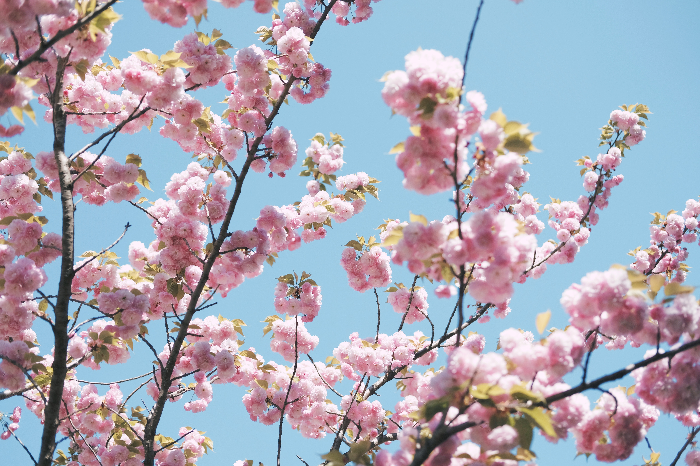

Spring
Spring is one of the most popular seasons to visit Tokyo, as the city is filled with beautiful cherry blossoms and a festive atmosphere. From late March to early April, Tokyo's parks and streets are covered in pink and white blooms of cherry blossoms, attracting both locals and tourists. During this time, people often hold hanami (cherry blossom viewing) parties, where they enjoy food and drinks under the blossoms. Some of the popular spots to see cherry blossoms in Tokyo include Ueno Park, Shinjuku Gyoen, and Chidorigafuchi .

Spring is also the season for many traditional Japanese festivals, or matsuri, including the Sanja Matsuri and Kanda Matsuri. These festivals feature lively parades with traditional costumes, music, and performances, and are a great way to experience Japanese culture.
Spring is extremely popular in Japan because of the cherry blossom trees and how iconic they are in pop culture because of their beauty and uniqueness,cherry blossoms have long been associated with Japanese culture, where they represent the beauty of life, the transience of existence, and the arrival of spring.